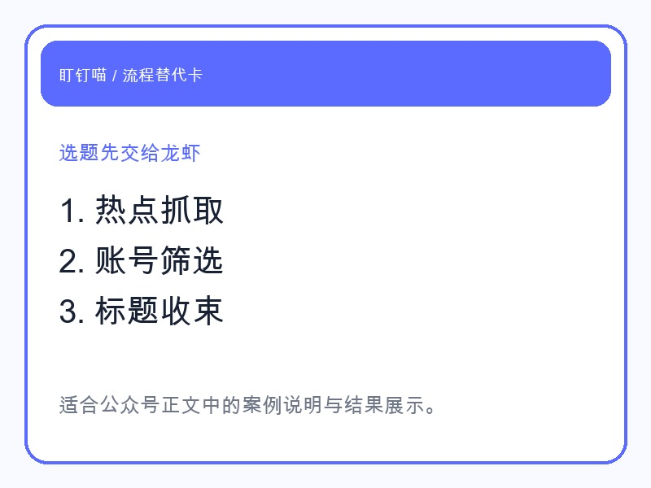
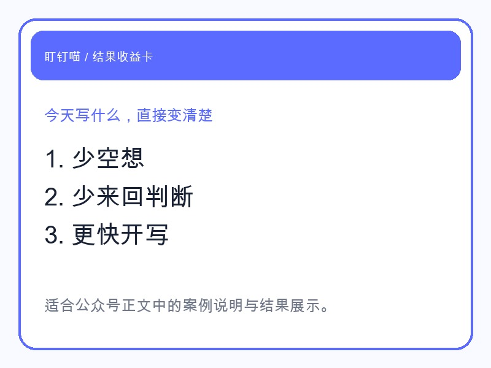

如果你自己做公众号，你一定知道，最拖人的不是写，而是决定今天写什么。
我这次让龙虾直接接手这一步，不是让它给我“灵感”，而是看它能不能把选题从模糊想法推进成可以直接开写的方向。
结果很直接：它先抓热点，再结合账号定位筛掉不适合的题，最后给出能写、能发、能引流的标题方向。
这一步如果人自己做，通常会消耗一整个上午。
它不是一句“最近这个热点不错”就结束。
它接手的是整条前置链路：

也就是说，龙虾不是在“陪你头脑风暴”。
它是在做一件更有结果感的事：把今天该写什么，往前推进到你可以直接开工。
这次我真正想看的，不是它会不会说，而是它最后交付的东西够不够落地。
我看到的结果包括：
这对一人公司特别重要。
因为你最缺的不是“多一个建议”，而是少一点反复判断。

当你不再自己来回想“到底写哪个”，内容节奏才会开始稳定。
如果你也在做公众号，尤其是下面这几类人，会很有体感：
你真正需要的，不是一个“很会写”的工具。
你需要的是一个能把选题前这堆判断活先接过去的龙虾。
这篇不是想讲选题理论。
只想把一个结果展示给你看：
龙虾可以先替你把“写什么”这件事做成结果。
如果你愿意，后面甚至可以接着让它把写稿、配图、复检、发草稿箱一起跑完。